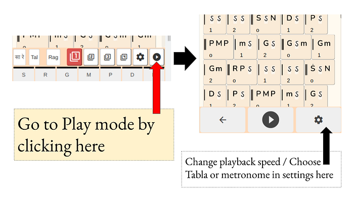
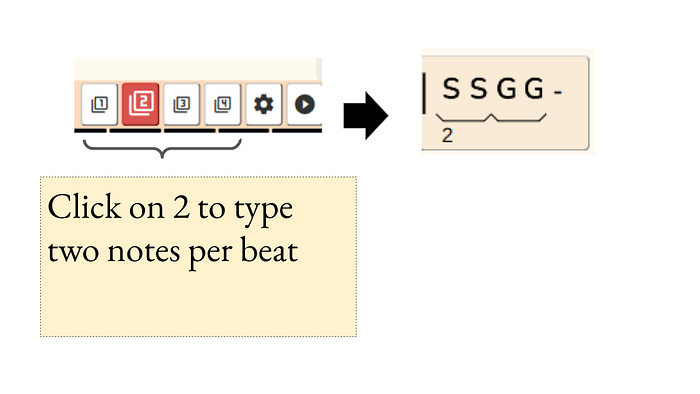
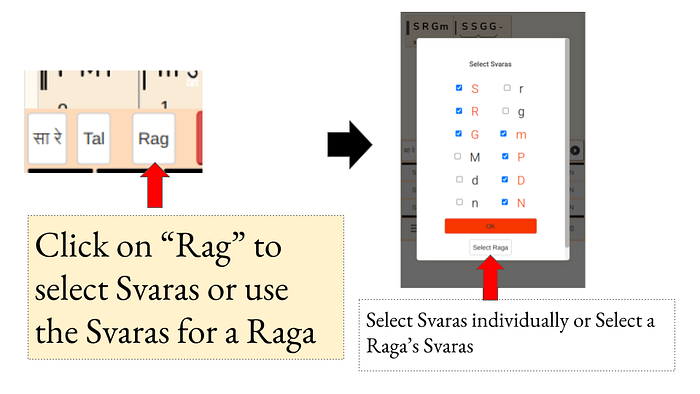
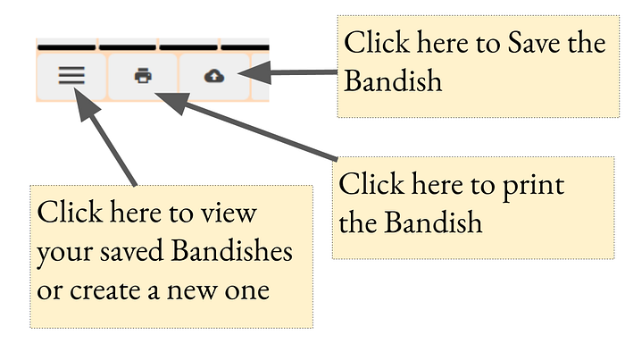
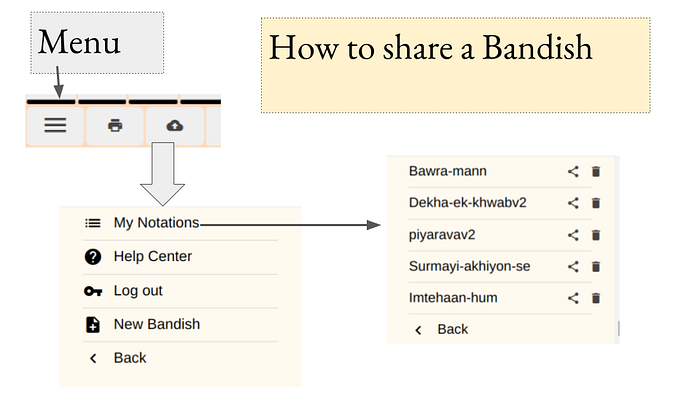

Swara Notebook app
The top half of the screen shows the notations, and the bottom half of the screen is a Whatsapp-style keyboard that shows the Svaras.
The Svaras can be seen in three rows, the top row being the higher or Taar octave, the middle row showing the middle octave, and so on.
While typing the Svaras, the notes of the Santoor are played, making is easy to figure out if the notes you typed sound correct.
Clicking on the ►(Play) button in the top row activates Play mode, where the Bandish can be played on the Santoor, with a Tabla or metronome accompaniment. The speed can be chosen too, and set between 60 and 300 bpm.

Activating Play mode to play the whole Bandish on the Santoor
The top of the keyboard has a row with numbers 1, 2, 3 & indicating the number of notes per beat.
By default, only one note per beat is typed on clicking on a Svara. Clicking on “2” will mean that two notes per beat can now be entered.

Similarly, you can enter 3 or 4 notes per beat as well.
Note that you need to click on 2 (or 3 or 4) before you type the Svaras. You can always rectify the mistake by deleting the previous Svaras, clicking on “2” and typing the Svaras again.
Clicking on the “Rag” button in the top row will open up the Svara Selector. This lets you select Svaras separately, or you can pick a particular Raga (which will automatically show only Svaras from that Raga)
Only the Svaras that are selected will appear in the keyboard, making it easy to avoid typing incorrect Svaras.

how to select Svaras in the SwaraNotebook keyboard
By default, the Bandish you type will be formatted to Teentaal (16 beats). Clicking on the “taal’ button in the top row will let you change the Taal
If you haven’t logged in, the first time you’ll see a Cloud upload button. This will prompt you to log in (with your Google / Gmail account), after which you can save the Bandish by giving it a title.

how to save Bandish in Swara Notebook
The buttons next to that are
Click on the menu button in the bottom left. This will show a menu with options
Clicking on My notations will show you the list of all the Bandishes, where you can click the share button to share the Bandish.

How to share a Bandish in Swara Notebook
Simple: Just click on the button to left of the Taal button. This lets you switch between English, Hindi (Devnagari) or Bangla to read and write the notations.